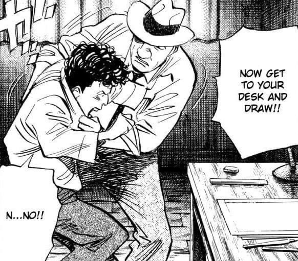

[2025/08/04]
August Updates
Hello!
Happy August! I have no idea how to check the amount of views this page gets through github. But I have 175 claps now. It was only two months ago that I had 124 claps... It's fun to watch the number go up...
I've put a new right-side bar because the site was looking a little bit empty and I edited the left-side bar a little bit. I was going to give the site a makeover but I don't think I have the strength and will to do that just yet. I was also trying to figure out Javascript but that gave me a headache so I gave up. Enjoy the new changes anyway! I think it keeps things fresh.
The top right image is the most important change, I've been planning to open a small online merch shop for months now and I finally received the invoice to pay for production... so as time goes I will update the image with anything new I am making and selling ^_^ Just going to wait for the shipping to carry out and hopefully I can open it by late September or October. It's my first time I will be actually selling and shipping things online so I'm excited!
Some little updates in my life: I've been reading a lot lately because drawing is too hard!!
I'm currently binge reading Sersan Keroro (Keroro Gunsou) comic books I got off toped (or shopee I forgot) for super cheap each... I didn't realize it but apparently now I have all the translated Keroro Gunsou comics because the indo/english versions only go up to volume 25... so I technically have a completed manga collection which is cool... But most of what I have been reading are actual books and novels hundreds of pages long (yes I don't only pirate manga). It took me a while to get back into it because I have shortened attention span obviously from today's algorithms but it's one of the best decisions I made this year I think. That and going on many walks (I love touching grass I love getting hit by UV 11 rays). I'm mostly just reading typical english-class-assigned books like 1984, Fahrenheit 451, etc. My favorite book I've read so far this year is The Outsiders by S.E. Hilton. It's a coming-of-age novel about two rival gangs of White Americans divided by their socioeconomic status. I don't know why the story was so compelling to me but everytime I picked up the book it's hard to put down so now everytime if someone asks me to recommend them a book I'll tell them to read that one. It's hard to believe that the author was only 16 years old when she wrote the whole story. Then it made me wonder if I could have achieved shit in my life when I was 16 if I wasn't so lazy. If anyone reads in this day and age (impossible challenge) please let me know any books you recommend! I'll read anything I'm not picky but I tend to lean towards fiction.
I've been using social media less and less and while it's doing wonders for me to not be in front of the screen all the time I'm a little sad that I don't post as often as I used to... I think it's important for me to not base my entire self worth on drawings but at the same time it's also what people kind of know me for... I think sometime last year I made the resolution to use the internet less which I kind of did but probably next year I should find some balance between posting and pretending my computer doesn't exist.

Okay that's all :3
est. 2024 © amfmradio.org